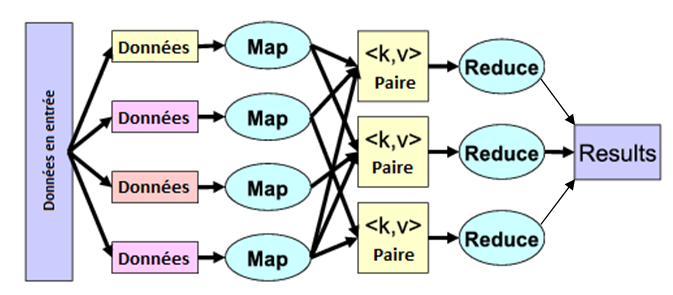
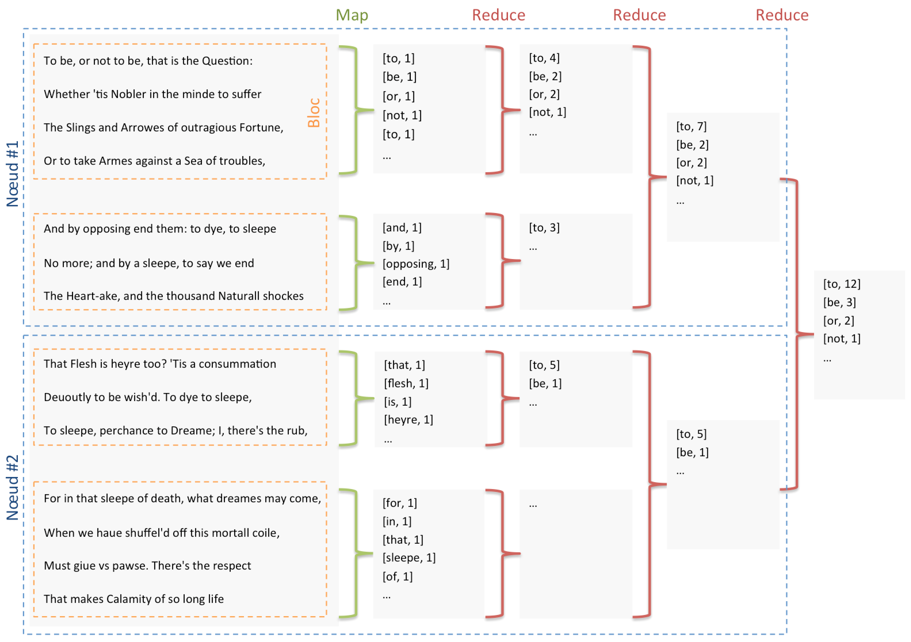
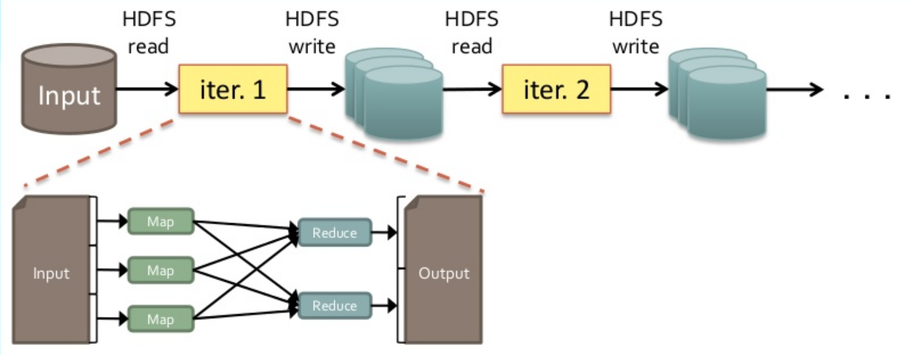
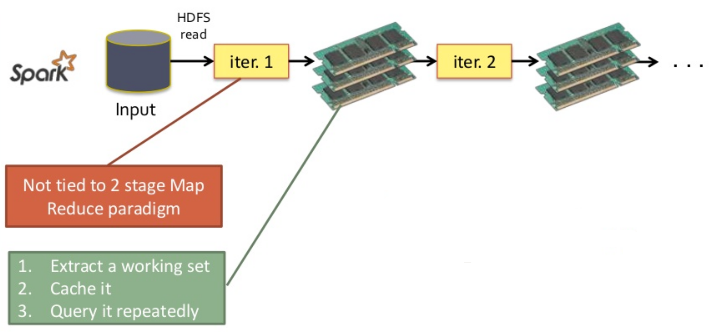
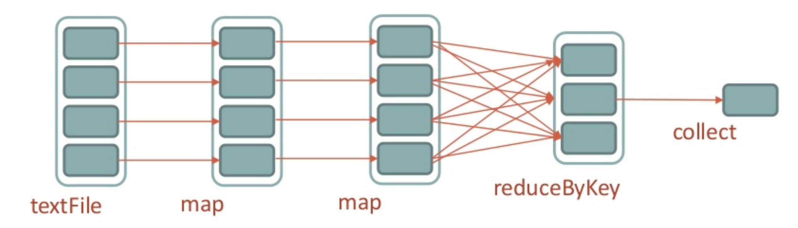
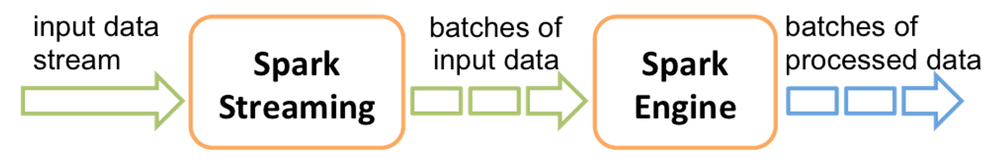
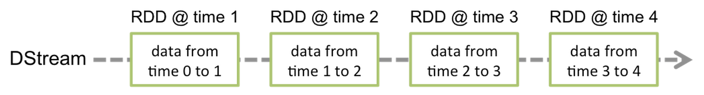

class: center, middle # Coding Dojo # Apache Spark & Open Data --- # Programme de la journée - Découvrir Spark - Manipuler des données - Open Data - Mairie de Paris - Wikipedia : page counts, articles - Monter un cluster en local - Découvrir Spark Streaming --- # Déroulement - 3 sprints - Démo + rétro à la fin de chaque sprint - En binômes, et on tourne - 9h30 - 10h30 : introduction - 10h30 - 12h30 : Spark en local - 12h30 - 14h00 : pause déjeuner - 14h00 - 16h00 : Spark en cluster - 16h00 - 18h00 : Spark Streaming --- # Introduction à Hadoop HDFS : - Hadoop Distributed File System - Stockage distribué sur "commodity hardware" - Fault tolerant MapReduce - Framework pour traiter de larges volumes de données - Traitement parallèle - Fault tolerant --- # MapReduce - map() : découpe le problème -> distribution sur les noeuds - reduce() : remonte les résultats  Manipulation de _tuples_ : - Clé - Valeur - Les tuples sont indépendants les uns des autres --- # MapReduce - Exemples - Analyse de logs - Recherche distribuée (Google, avant) - Traitement de fichiers texte --- # Word count - Découpage des fichiers par fragments de 128 Mo (framework) - Découpage des fragments par lignes (framework) - Découpage des lignes en mots (map) - Comptage des mots (reduce) - Sur chaque noeud - Puis sur un noeud pour le résultat final --- class: full # Word count - Shakespeare, Hamlet, acte III, scène 1  --- # Hadoop - Ecriture des résultats intermédiaires sur HDFS - Adapté aux traitements batches, pas au temps réel  --- # Spark - Conserve les résultats intermédiaires en mémoire - Une étape peut être un _map_ seul (pas de _reduce_) - Peut manipuler des types simples (pas forcément que des tuples)  --- # Spark RDD - Resilient Distributed Dataset - Abstraction, collection traitée en parallèle - Tolérant à la panne - Différentes sources : - Fichier sur HDFS - Fichier local - Collection en mémoire - S3 - ... --- # Spark Transformations : - Pour manipuler un RDD et retourner un autre RDD - Lazy ! - Exemples : * _map()_ : reçoit une valeur, retourne une valeur * _mapToPair()_ : reçoit une valeur, retourne un tuple * _filter()_ : filtre les valeurs/tuples * _groupByKey()_ : regroupe la valeurs par clés * _reduceByKey()_ : aggrège les valeurs par clés avec une fonction d'aggrégation * _join()_, _cogroup()_... : jointure entre deux RDD --- # Spark Actions finales : - Ne retournent pas un RDD - Exemples : * _count()_ : compte les valeurs/tuples * _foreach()_ : exécute une fonction sur chaque valeur/tuple (utile pour le debug) * _saveAsHadoopFile()_ : sauve les résultats au format Hadoop * _collect()_ : récupère les valeurs dans une liste (List< T >) --- # Spark - Exemple ```text ... fr Ignifuge 1 17634 fr Ignitron 1 9887 fr Ignorance 4 56569 ... ``` ```java sc.textFile(".../wikipedia/pagecounts") .map(line -> line.split(" ")) .mapToPair(s -> new Tuple2<String, Long>(s[1], Long.parseLong(s[2]))) .reduceByKey((x, y) -> x + y) .collect(); ```  --- # Spark en Cluster Plusieurs options - YARN - Mesos - Standalone - Workers démarrés individuellement - Workers démarrés par le master --- class: center, middle # La VM --- # La VM - Ubuntu - Java 8 - Eclipse (/home/dojo/workspace/eclipse) - Maven - Spark 1.1.0 - DOJO_HOME = /home/dojo/workspace/coding-dojo-spark/dojo-spark - DATA_HOME = /home/dojo/workspace/coding-dojo-spark/data - SPARK_HOME = /home/dojo/workspace/spark-1.1.0-bin-hadoop2.4 - User : dojo/dojo - **Ne pas toucher la touche Ctrl droite !** --- class: center, middle # TP #1 --- # Use case #1 ## Open Data Paris - Arbres alignements - Les quelques 110 000 arbres d'alignements de Paris avec leur type et leur emplacement géographique. - Fichier CSV, un record par arbre. **→ Faire des analyses statistiques :** - Compter le nombre d'arbres par type - Calculer la circonférence moyenne des arbres - ... --- # Use case #2 ## Wikipedia Pagecounts Statistiques de pages vues : - par "projet Wikipedia" - aggrégées par heure - format : projet page nb_visites volume_donnees Deux datasets : - _wikipedia-pagecounts-days_ : 5 fichiers de statistiques du dimanche à minuit - _wikipedia-pagecounts-hours_ : les 24 fichiers d'une journée complète Source : [Page view statistics for Wikimedia projects](https://dumps.wikimedia.org/other/pagecounts-raw/) --- # Use case #2 ## Wikipedia Pagecounts **→ Calculer le nombre de visite de la page "Coupe du Monde de Football" dans chaque pays** - _wikipedia_worldcup_pages_ : les noms des pages dans chaque langue - nécessité de croiser deux RDD --- class: center, middle # TP #2 --- # Mise en cluster - Cluster HDFS - Cluster Spark * En mode standalone --- # DNS... à la main - Régler le hostname de la machine - Editer les fichiers `/etc/hosts` de tous les noeuds --- # Cluster HDFS Fichier core-site.xml ``` <property> <name>fs.defaultFS</name> <value>hdfs://192.168.1.10:9000</value> </property> ``` Fichier hdfs-site.xml : ``` <property> <name>dfs.name.dir</name> <value>/home/dojo/workspace/hdfs_nn</value> </property> <property> <name>dfs.data.dir</name> <value>/home/dojo/workspace/hdfs_dn</value> </property> ``` Fichier slaves : ``` 192.168.1.10 192.168.1.11 ... ``` --- # Cluster HDFS Formatter le file system : ``` $ hdfs namenode -format ``` Lancer le namenode et le datanode individuellement : ``` $ hdfs namenode $ hdfs datanode ``` Lancer le cluster HDFS (namenode+datanodes) : ``` $ $HADOOP_HOME/sbin/start-dfs.sh ``` --- # Cluster HDFS Interface de supervision : http://192.168.1.10:50700 Manipuler le file-system : ``` $ hdfs dfs -ls / $ hdfs dfs -mkdir /data $ hdfs dfs -copyFromLocal wikipedia-pagecounts-days /data ``` --- # Cluster Spark ## Démarrer le master Sur le master : ``` export SPARK_MASTER_IP=192.168.1.10 $SPARK_HOME/sbin/start-master.sh ``` Interface de supervision : http://192.168.1.10:8080 --- # Cluster Spark ## Déclarer les slaves Sur le master, éditer le fichier $SPARK_HOME/conf/slaves : ``` 192.168.1.10 192.168.1.11 192.168.1.12 ``` ## Démarrer les slaves Sur le master : ``` $SPARK_HOME/sbin/start-slaves.sh ``` --- # Soumettre un job Préparer l'exécuteur : ```java SparkConf conf = new SparkConf() .setAppName("..."); ``` (Pas de .setMaster(...)) Préparer le JAR avec Maven : ``` mvn package ``` Distribuer le JAR sur HDFS : ``` hdfs dfs -rm -f /dojo-spark-0.0.1-SNAPSHOT-yourname.jar hdfs dfs -put target/dojo-spark-0.0.1-SNAPSHOT.jar /dojo-spark-0.0.1-SNAPSHOT-yourname.jar ``` Soumettre un job (ici AnalyseWikipediaWorldCup) : ``` $SPARK_HOME/bin/spark-submit \ --class fr.ippon.dojo.spark.AnalyseWikipediaWorldCup \ --master spark://192.168.1.10:7077 \ --deploy-mode cluster \ hdfs://192.168.1.10:9000/jars/dojo-spark-0.0.1-SNAPSHOT-yourname.jar ``` --- class: center, middle # TP #3 --- # Spark Streaming - DStream : Discretized Streams - Découpe un flux continu en batches - DStream -> séquence de RDDs   --- # Spark Streaming Sources : - Kafka - Flume - HDFS - ZeroMQ - Twitter - ... --- # Use case - Récupérer les tweets mentionnant #Android - Extraire les autres hashtags - Faire la liste des hashtags les plus utilisés toutes les 10 secondes - Aggréger les résultats par périodes de 30 secondes **Créer des clés d'API Twitter sur http://dev.twitter.com.** --- class: center, middle # Les données --- # Les données (1/4) ## Open Data Paris - Arbres alignements - Les quelques 110 000 arbres d'alignements de Paris avec leur type et leur emplacement géographique. - Fichier CSV, un record par arbre. --- # Les données (2/4) ## Open Data Paris - Tonnage déchets bacs jaunes - Tableau croisé du tonnage des déchets en bacs jaunes, par arrondissement et par mois, sur l'année 2011. - Fichier CSV, un record par arrondissement, une colonne par mois. --- # Les données (3/4) ## Wikipedia Pagecounts Statistiques de pages vues : - par "projet Wikipedia" - aggrégées par heure - format : projet page nb_visites volume_donnees Deux datasets : - wikipedia-pagecounts-days : 5 fichiers de statistiques du dimanche à minuit - wikipedia-pagecounts-hours : les 24 fichiers d'une journée complète Source : [Page view statistics for Wikimedia projects](https://dumps.wikimedia.org/other/pagecounts-raw/) --- # Les données (4/4) ## Wikipedia Articles L'export complet de Wikipedia version "en".